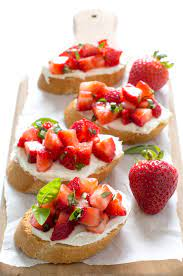

Strawberry Bruschetta

Description
This is a delicious variation of the popular tomato based appetizer.
The strawberries are warm and sweet and the sugar is caramelized and crunchy! Your guests will love it!
Ingredients
- 24 slices French baguette
- 1 tablespoon butter, softened
- 2 cups chopped fresh strawberries
- 1/4 cup white sugar, or as needed
Steps
- Preheat your oven's broiler. Spread a thin layer of butter on each slice of bread.
Arrange bread slices in a single layer on a large baking sheet.
- Place bread under the broiler for 1 to 2 minutes, just until lightly toasted.
Spoon some chopped strawberries onto each piece of toast, then sprinkle sugar
over the strawberries.
- Place under the broiler again until sugar is caramelized, 3 to 5 minutes.
Serve immediately.